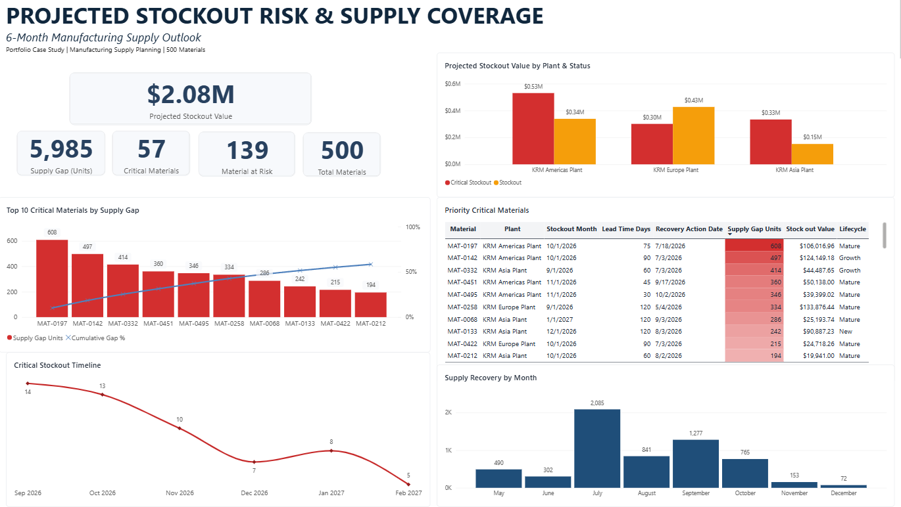

Dashboard

Business Problem
A portion of the 500-material portfolio is projected to experience stockouts within the next six months, creating supply shortages and financial exposure.
The analysis was designed to determine:
- Which materials are projected to stock out?
- When is each stockout expected to occur?
- How large is the projected supply gap?
- What is the financial exposure of the shortage?
- Which materials require the earliest recovery action?
The objective is to convert supply and demand data into a prioritized exception list that supports proactive supply planning decisions.
Dataset
The project uses a synthetic manufacturing supply planning dataset representing 500 materials across multiple plants.
The analysis integrates:
- Material master data
- Customer master data
- Historical demand actuals
- Demand forecast
- Inventory snapshots
- Planned supply
The synthetic dataset was created with AI assistance for portfolio demonstration purposes and does not contain confidential company data.
Methodology
Databricks SQL
Data preparation, validation, integration, and stockout-risk calculations.
- Record and uniqueness checks
- Duplicate and missing-value validation
- Master-data consistency checks
- Demand and supply integration
Python / Spark
Analytical validation and supply-risk analysis using Spark DataFrames.
- Material-level stockout exposure
- Critical-material prioritization
- Supply-gap concentration
- Plant-level exposure
- Recovery timing
Power BI
Decision-support visualization focused on exceptions, financial exposure, material priorities, and recovery timing.
Key Findings
- 500 materials were evaluated across the six-month planning horizon.
- 139 materials were identified as at risk.
- 57 materials were classified as critical.
- Critical materials represent a projected 5,985-unit supply gap.
- Total projected stockout exposure is approximately $2.08M.
- Supply-gap exposure is concentrated among a smaller group of critical materials.
- Plant-level exposure varies, requiring targeted recovery priorities.
Supply Planning Insights
Identifying a projected stockout alone is not sufficient for prioritization. Materials with larger supply gaps, higher financial exposure, and longer lead times require earlier intervention.
Recovery timing should therefore consider the expected stockout month together with the lead time required to replenish the material. This creates a forward-looking exception-management approach rather than reacting only after inventory becomes unavailable.
Recommendations
- Prioritize critical materials by supply-gap exposure. Focus planner attention on materials contributing the largest projected shortages.
- Trigger recovery actions based on lead time. Review and escalate long-lead-time materials before their projected stockout month.
- Use financial exposure alongside unit shortages. Prioritize shortages using both operational volume and projected stockout value.
- Manage recovery priorities by plant. Direct recovery efforts toward locations with the highest concentration of critical exposure.
- Refresh the analysis each planning cycle. Recalculate stockout risk as demand, inventory, and planned supply conditions change.
Project Files
Technical project files are available for review:
Conclusion
This project demonstrates an end-to-end supply planning analytics workflow that transforms demand, inventory, and planned supply data into actionable stockout-risk priorities.
The analysis moves beyond reporting inventory levels by identifying what is at risk, when the risk occurs, how large the exposure is, and when recovery action should begin.